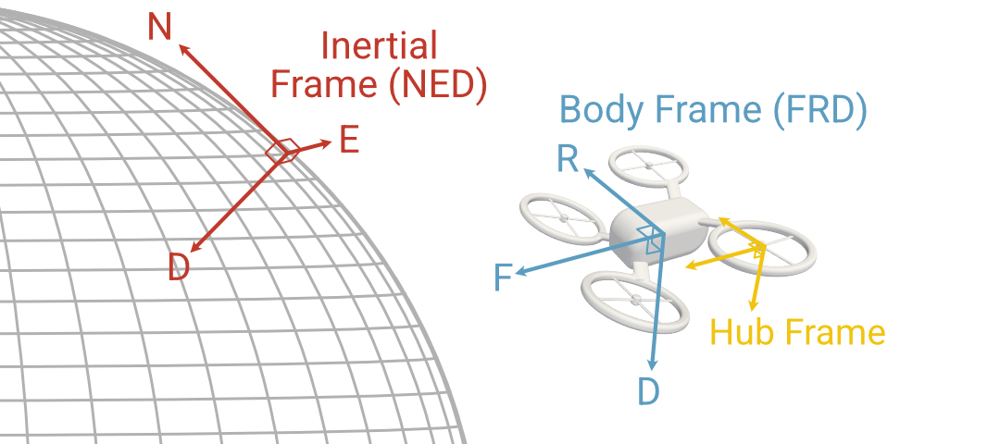

Part 1: Fundamentals of multirotor dynamics¶
Before we get into more accurate aerodynamics modeling, it’s easiest to start with the basic kinematic equations and a highly simplified dynamics model. Then we can develop our modeling framework with a view towards extensibility.
6-dof rigid body dynamics¶
Let’s start with the basics of rigid body dynamics. Our goal is to develop a set of equations that will fully determine the evolution of a rigid body if we know the applied forces and moments. To do so we will work primarily with two reference frames:
The “world” frame: an inertial or Newtonian frame denoted N, in which the \(x\)-\(y\)-\(z\) axes are defined with the North-East-Down (NED) convention
The “body” frame: a non-inertial body-fixed reference frame denoted B whose origin is at the body center of mass and with axes defined according to the Forward-Right-Down (FRD) convention
The position of the center of mass of the vehicle in the “world” frame is \(\mathbf{p}_N\) (and clearly the body-relative position is always \(\mathbf{p}_B = 0\)). For the sake of simplicity we will represent orientation using Euler angles in the yaw-pitch-roll sequence, i.e. the transformation from the world frame to the body frame takes place as a sequence of three rotations:
Right-handed rotation about the world-frame \(\hat{z}\) axis by the yaw angle \(\psi\)
Right-handed rotation about the new \(\hat{y}\) axis by the pitch angle \(\theta\)
Right-handed rotation about the new \(\hat{x}\) axis by the roll angle \(\phi\)
From these three Euler angles \((\phi, \theta, \psi)\) we can construct the \(3 \times 3\) rotation matrix \(~^B\!\mathbf{C}^N(\phi, \theta, \psi)\), which relates any vector \(\mathbf{p}_N\) expressed world-frame coordinates to the same vector in body-frame coordinates according to the relations
That is, the rotation matrix \(~^B\!\mathbf{C}^N\) satisfies the orthogonal matrix property that the inverse transformation is \(~^N\!\mathbf{C}^B = [~^B\!\mathbf{C}^N]^{-1} = [~^B\!\mathbf{C}^N]^T\).
The combination of the position \(\mathbf{p}_N\) with the Euler angles \(\mathbf{\Phi} = \begin{bmatrix} \phi & \theta & \psi \end{bmatrix}^T\) comprises the six “degrees of freedom” of the rigid body. However, to fully specify the state of the system we also need to know the velocity and angular velocity of the body. It is generally more convenient to work with these quantities in the body-fixed reference frame even though this frame is non-inertial, for instance because this means that the inertia matrix does not vary in time (unless the weight or mass distribution changes, which we will not consider here). Defining the body-frame velocity \(\mathbf{v}_B\) and angular velocity \(\mathbf{\omega}_B\), the full state has 12 elements:
Kinematic relations¶
The evolution equations for this state are complicated by two factors. First, the velocities and positions are expressed in different reference frames, so for instance it is not the case that \(\dot{\mathbf{p}}_N = \mathbf{v}_B\). Second, the Euler angles do not make up a vector and the time derivatives of the Euler angles are not equal to the angular velocity in any reference frame. Instead, the two are related according to the “Euler kinematical equations”, derived for instance in Sec 1.4 of Stevens, Lewis, and Johnson.
Note that the matrix \(H(\phi, \theta)\) becomes singular at \(\pm 90\) degrees pitch, leading to the issue known as “gimbal lock”. As a result quaternion representations of rotations are generally preferable, but here we will use Euler angles for the sake of simplicity and interpretability and remember to avoid overly aggressive maneuvers.
The time derivative of world-frame position, on the other hand, is just related to the body-frame velocity by the rotation matrix:
Finally, since the velocity and angular velocity are expressed in the non-inertial body frame, Newton’s laws have to be augmented with “pseudo” forces and moments, which we will give here without derivation:
in which \(m\) is the mass of the body, \(J_B\) is its inertia matrix, and \(\mathbf{F}_B\) and \(\mathbf{M}_B\) are the net body-referenced force and moment, respectively. Remember that gravity is typically most easily defined in the world frame, and so must be rotated into the body frame before its contribution is added to the net force. This set of four vector equations fully defines the 6-dof rigid body equations of motion for a flight vehicle, although they will not hold in all cases, for instance if:
The distances considered are long enough that the curvature of the Earth is significant
The mass or inertia matrix of the body is time-varying
The body cannot be considered a single rigid object, for instance if the motion of flight control surfaces cannot be safely neglected.
Simplified dynamics model¶
The preceding derivation is fairly general, and could be adapted to helicopters, drones, fixed-wing aircraft, missiles, etc. The dynamics of these vehicles are distinguished by the forces and moments to which they are subject, and by the effect of external controls.
In our multirotor model we will primarily consider three sources of external influence:
Gravity: Modeled as a constant force \(m g_0\) in the inertial-frame \(\hat{z}\)-direction
Drag: A single force applied at the center of pressure of the vehicle \(\mathbf{r}_B^{CoP}\), generally dependent on the airspeed of the vehicle and its orientation with respect to this “wind”
Rotors: A force and moment produced by each rotor, in general dependent on aerodynamics and rotor speeds
The net force in the body frame
where \(\mathbf{F}_B^D\) is the drag force, \(\mathbf{F}_N^g\) is the inertial-frame gravity force, and \(\mathbf{F}_B^j\) is the force from the \(j\)-th rotor.
The net moment in the body frame contains only contributions from drag (if the center of pressure is not collocated with the center of mass) and the rotors. The rotor contributions
where \(\mathbf{M}_B^j\) are the moments due to the \(j\)-th rotor motion (e.g. torque) and \(\mathbf{r}_B^j\) is the offset of the center of the \(j\)-th rotor (the lever arm).
Later we will introduce additional “hub” reference frames to model the rotor dynamics in more detail, but at this stage we will use simple models that can easily be written in body-fixed coordinates.
For the drag force, we will neglect any variability with respect to angle of attack or sideslip angle and assume that the body drag force can be written in terms of the air density \(\rho\), characteristic cross-sectional area \(A\), and dimensionless drag coefficient \(C_D\) by
A simplified rotor model assumes a quadratic dependence on rotor angular velocity. That is, if \(\Omega_j\) is the angular velocity of the \(j\)-th rotor in rad/s and \(H_j\) is a reference frame attached to the \(j\)-th rotor hub, we will assume that
where \(k_F\) and \(k_M\) are force and moment coefficients, and we assume that each is purely in the hub-frame \(z\)-direction. The sign of the moment will also be flipped if the rotor is spinning clockwise. The reference frames are summarized in the following figure:
{kind=link}
The center of the rotor hub is offset from the body center of mass by \(\mathbf{r}_B^j\), and we define the \(x\)-\(y\) plane of the hub frame to be in the rotor plane with the \(z\)-axis pointing opposite to the direction of nominal thrust (i.e. downward). This may be inclined with respect to the body-frame \(x\)-\(y\) plane if the rotor has a static “cant”, in which case there will be a constant rotation matrix \( ~^B\!\mathbf{C}^{H_j}\) that transforms from the \(j\)-th hub frame to the body frame. The force and moment in the body frame are then
This rotor model will tend to be approximately correct near hover, but will generally be too simplistic to properly predict the rotor loads in other maneuvers. Later we will revisit the rotor model, but for the time being this set of equations is enough to build a full multirotor dynamics model.